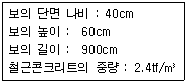
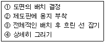

전산응용건축제도기능사 (2007-01-28 기출문제)
1과목: 건축구조
1. 트러스를 종횡으로 배치하여 입체적으로 구성한 구조로서, 형강이나 강관을 사용하여 넓은 공간을 구성하는데 이용되는 것은?
- 셀 구조
- 돔 구조
- 현수 구조
- 스페이스프레임
(정답률: 46%)

2. 벽돌조에서 콘크리트 기초판의 두께는 기초판 폭의 얼마 정도로 하는가?
- 2/3
- 1/2
- 1/3
- 1/4
(정답률: 47%)
3. 철근콘크리트구조에서 1방향 슬래브의 두께는 최소얼마 이상이어야 하는가?
- 80㎜
- 100㎜
- 120㎜
- 160㎜
(정답률: 60%)
4. 다음 중 목재의 이음과 맞춤을 할 때 주의사항으로 옳지 않은 것은?
- 공작이 간단하고 튼튼한 접합을 선택할 것
- 맞춤면은 수축, 팽창을 위해 틈을 주어 가공할 것
- 이음과 맞춤의 위치는 응력이 작은 곳으로 할 것
- 이음· 맞춤의 단면은 응력의 방향에 직각으로 할 것
(정답률: 59%)
5. 다음 중 계단실의 크기 결정시 고려할 사항과 가장 관계가 먼 것은?
- 계단 마감재료의 종류
- 층 높이
- 계단참의 유무
- 계단 높이
(정답률: 74%)
6. 벽돌조 공간쌓기에서 벽체 연결철물 간의 수평간격은 최대 얼마 이하로 하여야 하는가?
- 450㎜
- 600㎜
- 750㎜
- 900㎜
(정답률: 29%)
7. 철근콘크리트 기둥에 관한 설명 중 옳지 않은 것은?
- 무근콘크리트로 기둥을 만들 경우 단면이 커져서 실용적이지 않다.
- 띠철근 기둥 단면의 최소치수는 200㎜ 이다.
- 띠철근 기둥의 단면적은 최소 60,000㎜ 이상이어야 한다.
- 기둥의 주근은 띠철근 또는 나선철근이다.
(정답률: 45%)
8. 압축력을 받는 길고 가느다란 부재가 하중이 증가함에 따라 하중이 작용하는 직각 방향으로 변형하여 내력이 급격히 감소하는 현상을 무엇이라 하는가?
- 휨
- 인장
- 좌굴
- 비틀림
(정답률: 81%)
9. 바닥 면적이 40㎡ 일 때 보강콘크리트조의 내력벽 길이의 총합계는 최소 얼마 이상이어야 하는가?
- 4m
- 6m
- 8m
- 10m
(정답률: 63%)
10. 돌구조에서 창문 등의 개구부 위에 걸쳐대어 상부에서 오는 하중을 받는 수평부재는?
- 문지방틀
- 인방돌
- 창대돌
- 쌤돌
(정답률: 75%)
11. 다음의 철근콘크리트보에 대한 설명 중 옳지 않은 것은?
- 내민보는 보의 한 끝이 지지점에서 내밀어 달려 있는 보이다.
- 연속보에서는 지지점 부근의 하부에서 인장력을 받기 때문에, 이곳에 주근을 배치하여야 한다.
- 내민보는 상부에 인장력이 작용하므로 상부에 주근을 배치한다.
- 단순보에서 부재의 축에 직각인 스터럽의 간격은 단부로 갈수록 촘촘하게 한다.
(정답률: 35%)
12. 철골구조의 접합에서 접합면에 생기는 마찰력으로 힘이 전달되는 것으로 마찰접합이라고도 불리우는 것은?
- 리벳접합
- 핀접합
- 고력볼트접합
- 용접접합
(정답률: 65%)
13. 다음과 같은 조건에서 철근콘크리트보의 중량은?

- 5184 tf
- 518.4 tf
- 51.84 tf
- 5.184 tf
(정답률: 47%)
14. 나무구조의 마루에 대한 설명 중 옳지 않은 것은?
- 1층 마루에는 동바리마루, 납작마루가 있다.
- 2층 마루 중 보마루는 보를 걸어 장선을 받게 하고 그 위에 마루널을 깐 것이다.
- 동바리는 동바리돌 위에 수평재로 설치한다.
- 동바리마루는 동바리돌, 동바리, 멍에, 장선 등으로 구성된다.
(정답률: 51%)
15. 다음 중 용접 결함에 속하지 않는 것은?
- 언더컷(under cut)
- 앤드탭(end tab)
- 오버랩(overlap)
- 블로홀(blowhole)
(정답률: 61%)
16. 다음 중 창호철물과 용도의 연결이 옳지 않은 것은?
- 레일 - 미서기문
- 도어 체크 - 여닫이문
- 플로어 힌지 - 자재여닫이문
- 크레센트 - 회전문
(정답률: 66%)
17. 건물의 최하부에 놓여져 건물의 무게를 안전하게 지반에 전달하는 구조부는?
- 지붕
- 계단
- 기초
- 창호
(정답률: 92%)
18. 다음 중 철골구조에서 H자 형강보의 플랜지 부분에 커버플레이트를 사용하는 가장 주된 목적은?
- H자 형강의 부식을 방지하기 위해서
- 집중하중에 의한 전단력을 감소시키기 위해서
- 덕트 배관 등에 사용할 수 있는 개구부분을 확보하기 위해서
- 휨내력의 부족을 보충하기 위해서
(정답률: 52%)
19. 철근콘크리트 구조에 대한 설명으로 옳지 않은 것은?
- 콘크리트의 성질이 산성으로 철근의 부식을 막아주므로 내구성이 크다.
- 콘크리트는 압축력에 강하고, 철근은 인장력에 강하다.
- 설계가 비교적 자유롭다.
- 철골조에 비해 처짐 및 진동이 적은 편이다.
(정답률: 56%)
20. 철근콘크리트 내진벽의 배치에 관한 설명으로 틀린 것은?
- 위아래층에서 동일한 위치에 배치한다.
- 아래층에 많이 배치한다.
- 평면상으로 교점이 없으면 외력에 대한 저항이 크다.
- 하중을 고르게 부담하도록 배치한다.
(정답률: 45%)
2과목: 건축재료
21. 현대 건축 재료에 대한 설명으로 틀린 것은?
- 고성능력, 공업화가 요구된다.
- 건설 작업의 기계화에 맞도록 재료를 개선한다.
- 수작업과 현장시공의 재료로 개발한다.
- 생산성을 높이고 에너지를 절약한다.
(정답률: 86%)
22. 건축재료의 성질에 관한 용어로서 어떤 재료에 외력을 가했을 때 작은 변형만 나타나도 곧 파괴되는 성질을 나타내는 것은?
- 전성
- 취성
- 인성
- 연성
(정답률: 84%)
23. 다음 중 단열재료에 대한 설명으로 옳지 않은 것은?
- 열전도율이 높을수록 단열성능이 좋다.
- 일반적으로 다공질의 재료가 많다.
- 단열재료의 대부분은 흡음성도 뛰어나므로 흡음 재료로서도 이용된다.
- 섬유질 단열재는 겉보기 비중이 클수록 단열성이 좋다.
(정답률: 66%)
24. 대리석의 일종으로 특수 실내 장식재로 사용되는 것은?
- 석회석
- 트래버틴
- 안산암
- 화산암
(정답률: 79%)
25. 다음 중 열경화성 수지는?
- 염화비닐 수지
- 폴리스티렌 수지
- 요소 수지
- 아크릴 수지
(정답률: 39%)
26. 철, 니켈, 크롬 등이 들어 있는 유리로서 서향일광을 받는 창에 사용되며 단열유리라고도 불리우는 것은?
- 열선반사유리
- 자외선투과유리
- 열선흡수유리
- 자외선흡수유리
(정답률: 49%)
27. 알루미늄의 특성에 대한 설명으로 옳지 않은 것은?
- 전기나 열전도율이 높다.
- 압연, 인발 등의 가공성이 나쁘다.
- 가벼운 정도에 비하면 강도가 크다.
- 해수, 산, 알칼리에 약하다.
(정답률: 68%)
28. 다음 중 콘크리트 혼화재료에 속하지 않는 것은?
- 플라이애쉬
- 고로슬래그
- 시멘트
- 방청제
(정답률: 32%)
29. 다음 재료 중 천연 재료가 아닌 것은?
- 화강암
- 테라코타
- 석면
- 대리석
(정답률: 68%)
30. 목재의 강도에 관한 기술 중 옳지 않은 것은?
- 습윤상태일 때가 건조 상태일 때보다 강도가 크다.
- 목재의 강도는 가력방향과 섬유방향의 관계에 따라 현저한 차이가 있다.
- 비중이 큰 목재는 가벼운 목재보다 강도가 크다.
- 심재가 변재에 비하여 강도가 크다.
(정답률: 68%)
31. 다음 중 콘크리트 배합설계시 가장 먼저 하여야 하는 것은?
- 요구 성능의 설정
- 배합조건의 설정
- 재료의 선정
- 현장배합의 결정
(정답률: 60%)
32. 보크사이트와 같은 Al2O3의 함유량이 많은 광석과 거의 같은 양의 석회석을 혼합하여 전기로에서 완전히 용융시켜 미분쇄한 것으로, 조기의 강도발생이 큰 시멘트는?
- 고로 시멘트
- 실리카 시멘트
- 보통포틀랜드 시멘트
- 알루미나 시멘트
(정답률: 58%)
33. 목재의 절대건조비중이 0.54일 때 이 목재의 공극률은?
- 35%
- 46%
- 54%
- 65%
(정답률: 41%)
34. 다음의 점토제품 중 가장 저급의 원료를 사용하는 것은?
- 타일
- 기와
- 테라코타
- 위생도기
(정답률: 55%)
35. 콘크리트의 강도 중에서 가장 큰 것은?
- 인장강도
- 휨강도
- 전단강도
- 압축강도
(정답률: 73%)
36. 다음 미장재료 중 응결 경화 방식이 기경성이 아닌 것은?
- 석고 플라스터
- 회반죽
- 회사벽
- 돌로마이터 플라스터
(정답률: 38%)
37. AE제의 사용 효과에 대한 설명으로 옳지 않은 것은?
- 시공연도가 좋아진다.
- 수밀성을 개량한다.
- 동결융해에 대한 저항성을 개선하다.
- 동일 물시멘트비인 경우 압축강도가 증가한다.
(정답률: 64%)
38. 다음의 다공벽돌에 대한 설명 중 옳지 않은 것은?
- 비중이 1.2 ~ 1.5 정도이다.
- 방음, 흡음성이 좋다.
- 절단, 못치기 등의 가공이 우수하다.
- 구조용으로 주로 사용된다.
(정답률: 60%)
39. 다음 중 강당, 집회장 등의 음향조절용으로 쓰이거나 일반 건물의 벽 수장재로 사용하여 음향효과를 거둘 수 있는 목재 제품은?
- 플로링 블록
- 코펜하겐 리브
- 플로링 보드
- 파키트 패널
(정답률: 85%)
40. 목재 제품 중 파티클 보드(Particle board)에 대한 설명으로 옳지 않은 것은?
- 합판에 비해 휨강도는 떨어지나 면내 강성은 우수하다.
- 강도에 방향성이 거의 없다.
- 두께는 비교적 자유롭게 선택할 수 있다.
- 음 및 열의 차단성이 나쁘다.
(정답률: 72%)
3과목: 건축계획 및 제도
41. 계획 과정과 건축물의 형태 결정에 중요한 요인이 되는 건축대지의 조건 중 자연적 조건에 해당되지 않는 것은?
- 대지의 면적
- 대지의 방위
- 법규 규제
- 기후
(정답률: 79%)
42. 한국산업규격에서 건축제도 통칙의 기호로 옳은 것은?
- KS C
- KS B
- KS F
- KS E
(정답률: 92%)
43. 건축제도통칙에 따른 투상법의 원칙은?
- 제1각법
- 제2각법
- 제3각법
- 제4각법
(정답률: 82%)
44. 주택에서 옥내배선도에 기입하여야 할 사항과 가장 관계가 먼 것은?
- 전등의 위치
- 가구의 배치표시
- 콘센트의 위치 및 종류
- 배선의 상향, 하향의 표시
(정답률: 72%)
45. 건축제도의 치수기입에 관한 설명 중 옳지 않은 것은?
- 치수는 특별히 명시하지 않는 한 마무리 치수로 표시한다.
- 치수 기입은 치수선 중앙 윗부분에 기입하는 것이 원칙이다.
- 치수의 단위는 cm를 원칙으로 하고, 이 때 단위기호는 쓰지 않는다.
- 협소한 간격이 연속될 때에는 인출선을 사용하여 치수를 쓴다.
(정답률: 87%)
46. 다음 중 물체의 절단한 위치를 표시하거나, 경계선으로 사용되는 선은?
- 굵은실선
- 가는실선
- 일점쇄선
- 파선
(정답률: 59%)
47. 일반 평면도에 나타내지 않아도 되는 것은?
- 실의 배치 및 크기
- 개구부의 위치 및 크기
- 창문과 출입구의크기
- 보등 구조부분의 높이 및 크기
(정답률: 67%)
48. 램프나 카드, 숫자에 의하여 상황이나 행위를 표현하여 다수가 알도록 하는 설비를 무엇이라 하는가?
- 인터폰 설비
- 표시 설비
- 방송 설비
- 안테나 설비
(정답률: 73%)
49. 다음 중 아파트 주동의 평면 형식에 따른 분류에 속하지 않는 것은?
- 계단실형
- 판상형
- 편복도형
- 집중형
(정답률: 59%)
50. 주택의 생활공간 중 공동의 공간에 속하지 않는 것은?
- 거실
- 식사실
- 서재
- 응접실
(정답률: 89%)
51. 건축물을 만드는 과정을 3단계를 구분할 때, 가장 알맞게 나열된 것은?
- 기획→제작→시공
- 기획→설계→시공
- 설계→착공→완공
- 설계→시공→입주
(정답률: 88%)
52. 온도, 습도, 기류의 3요소를 어느 범위 내에서 여러 가지로 조합하면 인체의 온열감에 감각적인 효과를 나타낸다는 것과 가장 관계가 먼 것은?
- 실감온도
- 유효온도
- 감각온도
- 외기온도
(정답률: 57%)
53. 계단 또는 엘리베이터 홀로부터 직접 주거단위로 들어가는 형식으로 프라이버시의 확보가 양호한 것은?
- 계단실형
- 편복도형
- 중복도형
- 집중형
(정답률: 72%)
54. 다음의 부엌 계획에 대한 설명 중 옳지 않은 것은?
- 쾌적하고 능률적으로 작업할 수 있는 것은 물론 위생적인 측면에 유의를 하여야 한다.
- 작업 순서의 흐름 방향은 한쪽으로 한다.
- 위치는 항상 쾌적하고, 일광에 의한 건조 소독을 할 수 있는 서쪽이 가장 좋다.
- 부엌의 평면 형태 중 병렬형의 경우, 양쪽의 작업대 사이 간격이 너무 크면 좋지 않다.
(정답률: 65%)
55. 먼셀 표색계에서 사용하는10개의 기본 색상에 해당하지 않는 것은?
- 빨강
- 연두
- 분홍
- 보라
(정답률: 66%)
56. 다음 중 도면 제도 순서로 가장 알맞은 것은?

- ① ② ③ ④
- ① ② ④ ③
- ② ① ③ ④
- ② ① ④ ③
(정답률: 78%)
57. 주방용 개수기에 사용하는 트랩으로 관트랩에 비하여 봉수의 파괴가 적은 것은?
- P트랩
- U트랩
- S트랩
- 드럼트랩
(정답률: 57%)
58. 창호도에 표시하지 않아도 되는 것은?
- 창호형태
- 개폐방법
- 재료 및 치수
- 창호 단면도
(정답률: 42%)
59. 배수설비에서 트랩의 봉수가 파괴되는 원인과 가장 거리가 먼 것은?
- 증발
- 모세관 현상
- 유도 사이펀 작용
- 온도차에 의한 변화
(정답률: 55%)
60. 다음 중 주택 출입구에서 현관의 바닥면과 실내 바닥면의 높이차로 가장 알맞은 것은?
- 5cm
- 15cm
- 30cm
- 45cm
(정답률: 78%)